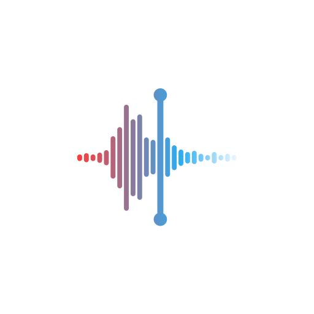

Minicon
A new, open source glyph theme
Add our beta repo


Minicon is a free, open source glyph theme. It features colourful gradients and intuitive icons, and the best thing is, anyone can add to it! The best part about our theme being open source is that anyone can add their own icons, masks, effects, etc! No more begging designers to add your favorite app, just add it yourself!
Made with help from these lovely people:
-
Entrepreneur/Scientist/Designer. Initially created and open-sourced Minicon.
-
High school student. Contributed to icon design.
-
High school theme developer
-
Tech addict who likes to get under the hood.
Designed glyph for health, COD and measure.
-
UI/UX enthusiast. Contributed to icon design.
-
Web design student who loves the color pink. Currently the web maintainer for Minicon.
Contribute to Minicon
Made with by the Minicon team,
from all around the world!